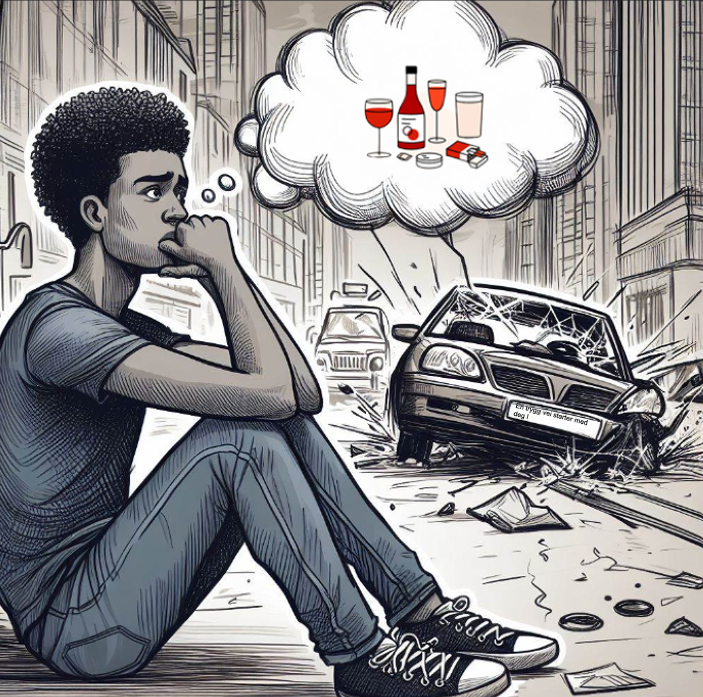

Trenger du hjelp med rusproblemer? Du er ikke alene!

Hvis du er en ungdom som sliter med rus, er det viktig å vite at det finnes hjelp og støtte tilgjengelig. Rustelefonen er en trygg ressurs hvor du kan få veiledning og rådgivning. De kan nås på telefonnummeret 08588. Dette er et gratis og anonymt tilbud for deg som trenger noen å snakke med om rusrelaterte utfordringer.
Å ta det første steget kan være skummelt, men husk at det er styrke i å søke hjelp. Rustelefonen er her for å lytte og gi støtte på veien mot bedre helse og velvære. Besøk nettsiden deres eller ring 08588 for hjelp i dag!